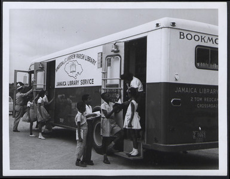
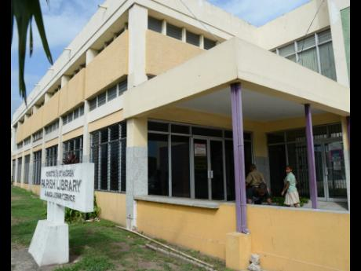
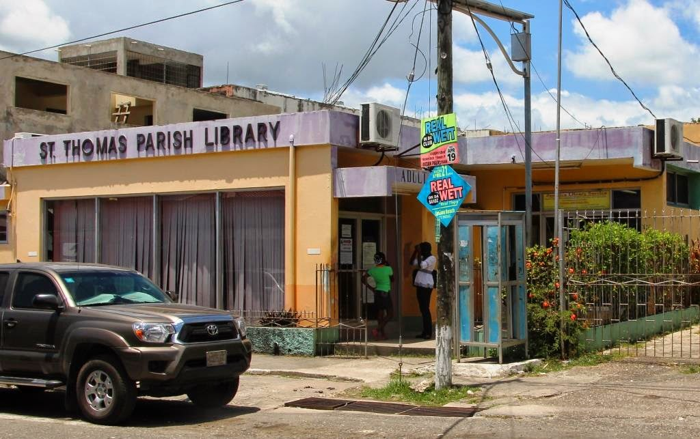
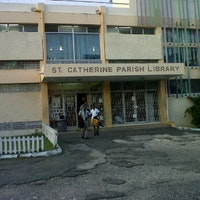

1) Watch video below
About Us
 
The Jamaica Library Service was founded in 1948 and serves under the the Ministry of Education.
This is a free public library open to schools and the general public island-wide. In each parish a Central Library
Board and a local Committee are two levels managed in the organization. The central statutory body is the Jamaica
Library Board which is responsible for island policies, the management and operation of a well coordinated library
service. Therefore, each committee in each parish network shows oversight to the operations in each network. There is
a provision of library covrage through an admin headquarters in Kingston and consist of 513 library service points and
1000 schools throughout the entire parishes.
Here are some photos of parish libraries that might be located near you:
- 
- 
- 
Contact Us
Telephone: (876)-908-7756
(876)-976-3412
Email: Jamaicalibraryedu@gmail.com
Jlseducation@yahoo.com